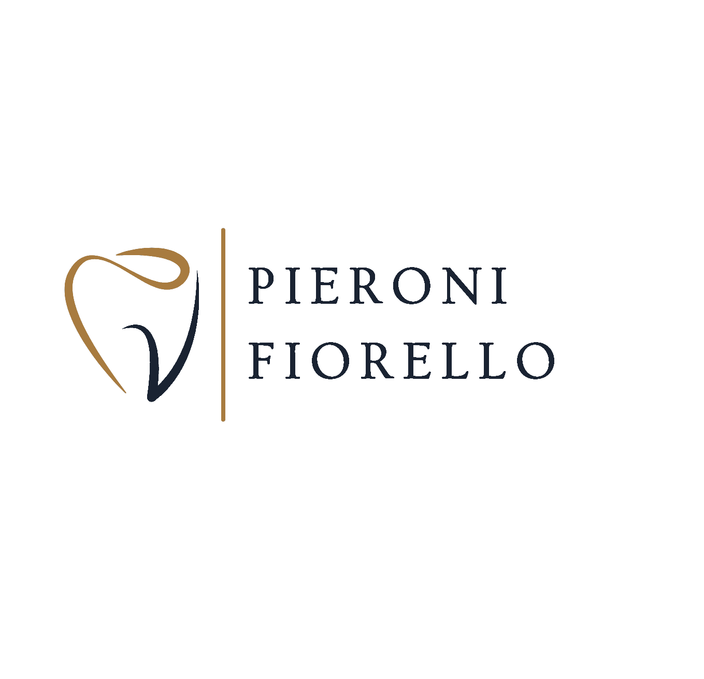

Doctor-OwnedPersonalized care.
Emergency CareSame-day visits.
Staten Island, NYClove Road since '82.
Full ServiceGeneral · Cosmetic · Implants.


At Pieroni & Fiorello DDS, you'll find something that's getting harder to come by — a doctor-owned practice where the same familiar faces greet you every visit, and your dentist actually knows you by name. Drs. Bryan Pieroni and Mark Fiorello lead a team committed to quality, unhurried care that Staten Island families trust. No corporate chains, no rotating providers — just a welcoming practice that feels less like a waiting room and more like home.